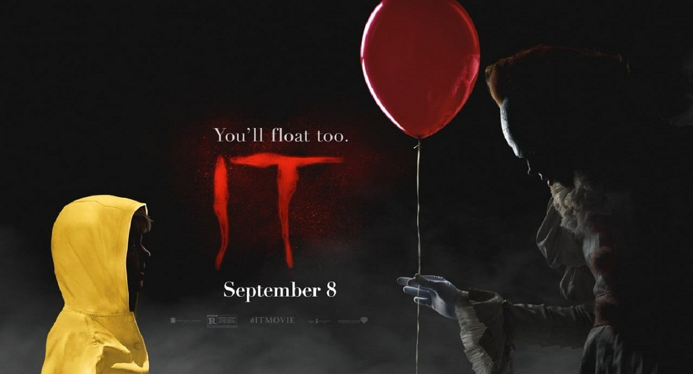
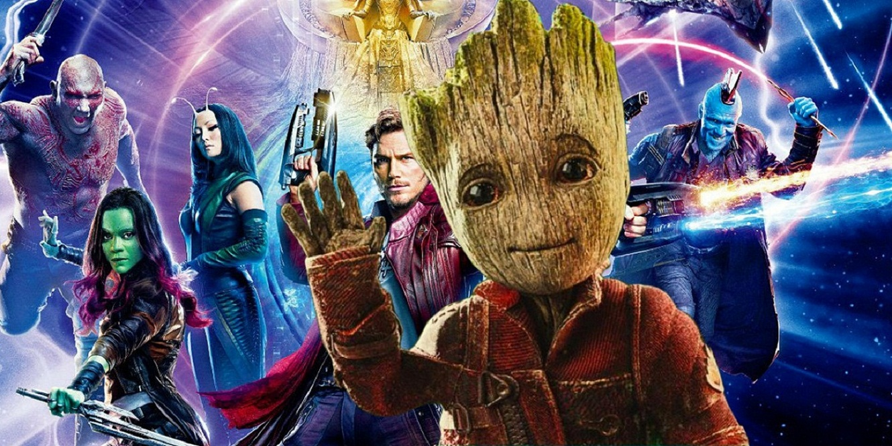

Avengers: Age of Ultron is a 2015 American superhero film based on the Marvel Comics superhero team the Avengers, produced by Marvel Studios and distributed by Walt Disney Studios Motion Pictures. It is the sequel to 2012's The Avengers and the eleventh film in the Marvel Cinematic Universe (MCU). The film was written and directed by Joss Whedon and features an ensemble cast that includes Robert Downey Jr., Chris Hemsworth, Mark Ruffalo, Chris Evans, Scarlett Johansson, Jeremy Renner, Don Cheadle, Aaron Taylor-Johnson, Elizabeth Olsen, Paul Bettany, Cobie Smulders, Anthony Mackie, Hayley Atwell, Idris Elba, Stellan Skarsgård, James Spader, and Samuel L. Jackson. In Avengers: Age of Ultron, the Avengers fight Ultron, an artificial intelligence obsessed with causing human extinction. The sequel was announced in May 2012, after the successful release of The Avengers. Whedon, the director of the first film, was brought back on board in August and a release date was set. By April 2013, Whedon had completed a draft of the script, and casting began in June with the re-signing of Downey. Second unit filming began in February 2014 in South Africa with principal photography taking place between March and August 2014. The film was primarily shot at Shepperton Studios in Surrey, England, with additional footage filmed in Italy, South Korea, Bangladesh, New York City, and various locations around England. While in post production, the film was converted to 3D and over 3,000 visual effects shots were added. Avengers: Age of Ultron premiered in Los Angeles on April 13, 2015, and was released on May 1, 2015, in North America, in 3D and IMAX 3D. The film received positive reviews from critics and grossed over $1.4 billion worldwide, making it the seventh-highest-grossing film in history and the fourth-highest-grossing film of 2015. A sequel, Avengers: Infinity War, is scheduled to be released on May 4, 2018, and another untitled sequel is scheduled for May 3, 2019.
It (also known as It: Chapter One) is a 2017 American supernatural horror film directed by Andy Muschietti, based on the 1986 novel of the same name by Stephen King. The screenplay is by Chase Palmer, Cary Fukunaga and Gary Dauberman. A second installment is planned. The film tells the story of seven children in Derry, Maine, who are terrorized by the eponymous being, only to face their own personal demons in the process. The novel was previously adapted into a 1990 miniseries. The film stars Jaeden Lieberher and Bill Skarsgård as Bill Denbrough and Pennywise the Dancing Clown, respectively, with Jeremy Ray Taylor, Sophia Lillis, Finn Wolfhard, Wyatt Oleff, Chosen Jacobs, Jack Dylan Grazer, Nicholas Hamilton, and Jackson Robert Scott in supporting roles. Principal photography began in the Riverdale neighborhood of Toronto on June 27, 2016, and ended on September 21, 2016. Other Ontario locations included Port Hope and Oshawa. It premiered in Los Angeles on September 5, 2017, and was theatrically released in the United States on September 8, 2017. Upon release, the film set numerous box office records and has grossed $685 million worldwide. Unadjusted for inflation, it is the highest-grossing horror film and the second highest-grossing R-rated film of all-time (after Deadpool). It is also the 9th highest-grossing film of 2017. It received positive reviews, with critics praising the performances, direction, cinematography and musical score, with many calling it one of the best Stephen King adaptations. A sequel, It: Chapter Two, is scheduled to be released on September 6, 2019.
Guardians of the Galaxy Vol. 2 is a 2017 American superhero film based on the Marvel Comics superhero team Guardians of the Galaxy, produced by Marvel Studios and distributed by Walt Disney Studios Motion Pictures. It is the sequel to 2014's Guardians of the Galaxy and the fifteenth film in the Marvel Cinematic Universe (MCU). The film is written and directed by James Gunn and stars an ensemble cast featuring Chris Pratt, Zoe Saldana, Dave Bautista, Vin Diesel, Bradley Cooper, Michael Rooker, Karen Gillan, Pom Klementieff, Elizabeth Debicki, Chris Sullivan, Sean Gunn, Sylvester Stallone, and Kurt Russell. In Guardians of the Galaxy Vol. 2, the Guardians travel throughout the cosmos as they help Peter Quill learn more about his mysterious parentage. The film was officially announced at the 2014 San Diego Comic-Con International before the theatrical release of the first film, along with Gunn's return from the first film, with the title of the sequel revealed a year later in June 2015. The film began principal photography in February 2016 at Pinewood Atlanta Studios in Fayette County, Georgia, with many crew changes from the first film due to other commitments. Filming concluded in June 2016. Gunn chose to set the sequel shortly after the first film to explore the characters' new roles as the Guardians, and to follow the storyline of Quill's father established throughout the first film—Russell was confirmed in that role in July 2016, portraying Ego, a departure from Quill's comic father. Guardians of the Galaxy Vol. 2 premiered in Tokyo on April 10, 2017 and was released in the United States on May 5, 2017, in 3D and IMAX 3D. It grossed more than $863 million worldwide, making it the sixth highest-grossing film of 2017, while also outgrossing its predecessor which had grossed over $773 million. The film received generally positive reviews, particularly for its visuals, soundtrack and cast, though critics deemed it not as "fresh" as the original. A sequel, Guardians of the Galaxy Vol. 3, is being developed, with Gunn returning to write and direct, and is scheduled to be released in 2020.

Gladiator is a 2000 epic historical drama film directed by Ridley Scott and written by David Franzoni, John Logan, and William Nicholson. It stars Russell Crowe, Joaquin Phoenix, Connie Nielsen, Ralf Möller, Oliver Reed (in his final role), Djimon Hounsou, Derek Jacobi, John Shrapnel, and Richard Harris. Crowe portrays Hispano-Roman general Maximus Decimus Meridius, who is betrayed when Commodus, the ambitious son of Emperor Marcus Aurelius, murders his father and seizes the throne. Reduced to slavery, Maximus rises through the ranks of the gladiatorial arena to avenge the murders of his family and his emperor. The film was released in the United States on May 5, 2000, and grossed $457 million worldwide. The film won multiple awards, including Best Picture, Best Actor for Crowe and three other Oscars at the 73rd Academy Awards. It has also been credited with rekindling interest in entertainment centered around ancient Greek and Roman culture, such as the TV series Rome.
Go agin to main page by this link